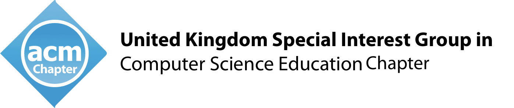
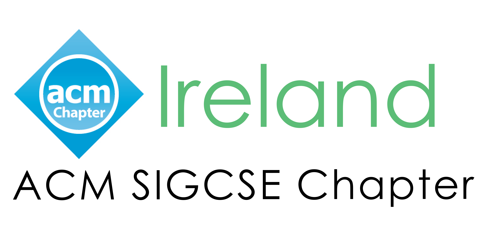
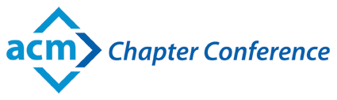
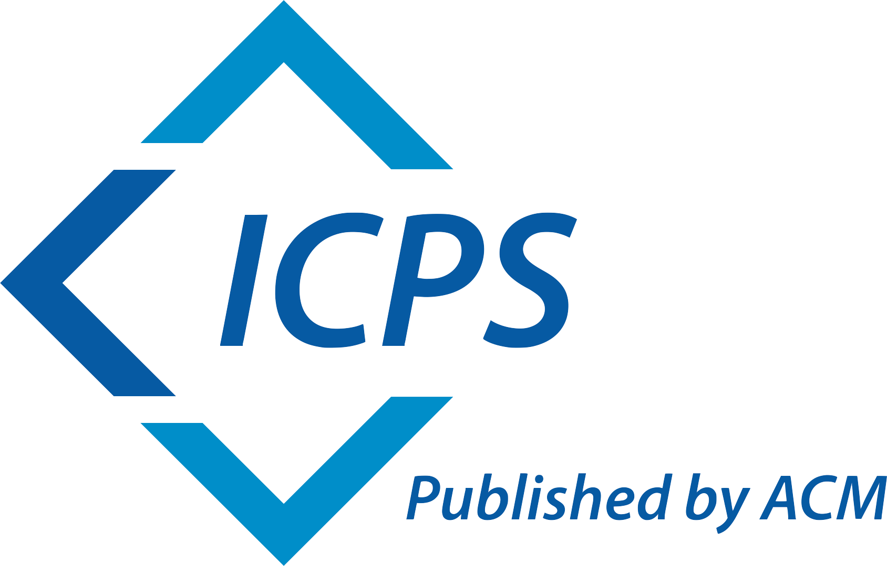

The UK and Ireland Computing Education Research (UKICER) conference, of the two SIGCSE chapters for UK and Ireland (uki-sigcse.acm.org and sigcseire.acm.org/), is a leading forum for researchers and practitioners to meet and share advances in computer science education.
We are a diverse and inclusive community bringing together researchers, academics, industry practitioners and teachers from across the UK and Ireland as well as from the rest of Europe and the wider world. UKICER was first established in 2019 and previous UKICER conferences have been held in Wales, Scotland, Ireland as well as England.
Welcome to Cambridge
Cambridge is a historical town north of London with first settlements dating back to Roman times. It is most famous for the University of Cambridge and its 31 colleges that are located in and around the city centre. Popular activities in Cambridge include punting on the river Cam and exploring the many small shops, museums and the rich history of the town. But Cambridge does not just have tourist appeal. We are very proud of our deep-rooted connections with computing and computing education, starting of course with notable Cambridge University alumni Charles Babbage and Alan Turing. In 1949, Professor Sir Maurice Wilkes of the University’s Mathematical Laboratory led the building of the EDSAC computer, which became the world’s first program-stored computer to enter regular service. After running a series of computing summer schools and other less formal computing educational programmes, the new department started the world’s first formal course in computer science in 1953: The Diploma of Numerical Analysis and Automatic Computing.
UKICER will be held in the Department of Computer Science and Technology on the West Cambridge site. It is being organised and hosted by the Raspberry Pi Computing Education Research Centre, which is based in the University of Cambridge with a strong partnership with the Raspberry Pi Foundation.
We very much look forward to welcoming you to the city and the University. As you prepare for the conference, you can follow the links in the navigation bar above to find out how to participate and attend UKICER.
Supporters



